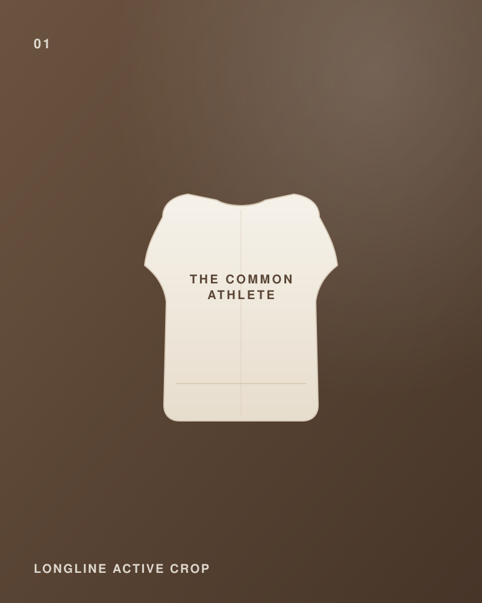

Sports Bra Support Levels, Explained

"Support level" gets thrown around a lot, but it's simpler than it sounds. It describes how much movement a bra controls — and the right level depends on what you're doing, not just your size.
Low support
Best for low-impact movement: Pilates, yoga, walks, strength training, and everyday wear. Low-support styles like a longline crop feel soft and unrestrictive, and many double as a top on their own. If most of your week is gym, Pilates, and coffee runs, this is your everyday workhorse.
Medium support
A middle ground for light runs, faster-paced classes, and mixed sessions. You get more hold without the locked-in feel of a high-impact bra. A low-to-medium crop covers a surprising amount of ground for the everyday athlete.
High support
Built for running, HIIT, and high-impact training where you want minimal bounce. These are more structured and snug — great for their purpose, but often more than you need for daily wear.
What about removable padding?
Removable cups let you choose your look and feel: keep them in for shape and coverage, take them out for a lighter, more natural fit. It's a small detail that makes one piece work for more occasions.
Quick guide
- Pilates, yoga, walks, daily wear — low support
- Light runs, mixed classes — low-to-medium support
- Running, HIIT — high support
Our Longline Active Crop is a low-to-medium support style with removable cups — designed for the everyday athlete who does a bit of everything.
One crop, many days
Low-to-medium support, removable cups, wears as a top. Available now — free delivery over S$60.
Shop the collectionFound this useful?
Share on WhatsApp